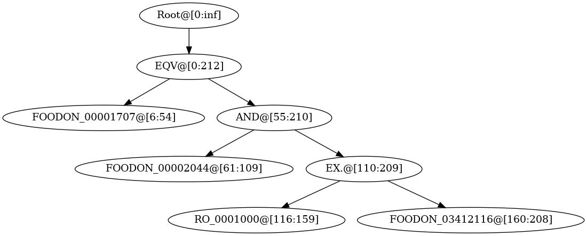

Verbalisation
Verbalising an ontology into natural language texts is a challenging task. \(\textsf{DeepOnto}\) provides some basic building blocks for achieving this goal.
OntologyVerbaliser
A rule-based natural language verbaliser for the OWL logical expressions, e.g., OWLAxiom
and OWLClassExpression.
This is not a full-fledged ontology verbaliser and supports a limited set of patterns regarding class expressions.
Attributes:
| Name | Type | Description |
|---|---|---|
onto |
Ontology
|
An ontology whose entities are to be verbalised. |
parser |
OntologySyntaxParser
|
A syntax parser for the string representation of an |
vocab |
Dict[str, List[str]]
|
A dictionary with |
Source code in deeponto/onto/verbalisation.py
53 54 55 56 57 58 59 60 61 62 63 64 65 66 67 68 69 70 71 72 73 74 75 76 77 78 79 80 81 82 83 84 85 86 87 88 89 90 91 92 93 94 95 96 97 98 99 100 101 102 103 104 105 106 107 108 109 110 111 112 113 114 115 116 117 118 119 120 121 122 123 124 125 126 127 128 129 130 131 132 133 134 | |
update_entity_name(entity_iri, entity_name)
Update the entity name dictionary.
If you want to change the name of a specific entity, you should call this function before verbalisation.
Source code in deeponto/onto/verbalisation.py
79 80 81 82 83 84 85 | |
OntologySyntaxParser
A syntax parser for the OWL logical expressions, e.g., OWLAxiom
and OWLClassExpression.
It makes use of the string representation (based on Manchester Syntax) defined in the OWLAPI. In Python,
such string can be accessed by simply using str(some_owl_object).
To keep the Java import in the main Ontology class,
this parser does not deal with OWLAxiom directly but instead its string representation.
Due to the OWLObject syntax, this parser relies on two components:
- Parentheses matching;
- Tree construction (
RangeNode).
As a result, it will return a RangeNode that
specifies the sub-formulas (and their respective positions in the string representation)
in a tree structure.
Warning
The parser currently supports a limited set of [patterns][deeponto.onto.parser.OntologyAxiomParser.abbreviate_owl_expression] due to the limitations of the ontology verbalisation module. Kindly ask the repository maintainer to add more patterns if needed.
Examples:
Suppose the input is an OWLAxiom that has the string representation:
>>> str(owl_axiom)
>>> 'EquivalentClasses(<http://purl.obolibrary.org/obo/FOODON_00001707> ObjectIntersectionOf(<http://purl.obolibrary.org/obo/FOODON_00002044> ObjectSomeValuesFrom(<http://purl.obolibrary.org/obo/RO_0001000> <http://purl.obolibrary.org/obo/FOODON_03412116>)) )'
After apply the parser, a RangeNode will be returned which can be rentered as:
axiom_parser = OntologyAxiomParser()
print(axiom_parser.parse(str(owl_axiom)).render_tree())
Output:-
Root@[0:inf] └── EQV@[0:212] ├── FOODON_00001707@[6:54] └── AND@[55:210] ├── FOODON_00002044@[61:109] └── EX.@[110:209] ├── RO_0001000@[116:159] └── FOODON_03412116@[160:208]
Or, if graphviz (installed by e.g., sudo apt install graphviz) is available,
you can visualise the tree as an image by:
axiom_parser.parse(str(owl_axiom)).render_image()
Output:

The name for each node has the form {node_type}@[{start}:{end}], which means a node of the type {node_type} is
located at the range [{start}:{end}] in the abbreviated expression (see [abbreviate_owl_expression][deeponto.onto.parser.OntologyAxiomParser.abbreviate_owl_expression]
below).
The leaf nodes are IRIs and they are represented by the last segment (split by "/") of the whole IRI.
Child nodes can be accessed by .children, the string representation of the sub-formula in this node can be
accessed by .text. For example:
parser.parse(str(owl_axiom)).children[0].children[1].text
Output:-
'[AND](<http://purl.obolibrary.org/obo/FOODON_00002044> [EX.](<http://purl.obolibrary.org/obo/RO_0001000> <http://purl.obolibrary.org/obo/FOODON_03412116>))'
Source code in deeponto/onto/verbalisation.py
137 138 139 140 141 142 143 144 145 146 147 148 149 150 151 152 153 154 155 156 157 158 159 160 161 162 163 164 165 166 167 168 169 170 171 172 173 174 175 176 177 178 179 180 181 182 183 184 185 186 187 188 189 190 191 192 193 194 195 196 197 198 199 200 201 202 203 204 205 206 207 208 209 210 211 212 213 214 215 216 217 218 219 220 221 222 223 224 225 226 227 228 229 230 231 232 233 234 235 236 237 238 239 240 241 242 243 244 245 246 247 248 249 250 251 252 253 254 255 256 257 258 259 260 261 262 263 264 265 266 267 268 269 270 271 272 273 274 275 276 277 278 279 280 281 282 283 284 285 286 287 288 289 290 291 292 293 294 295 296 297 298 299 300 301 302 303 304 305 306 307 308 309 310 311 312 313 314 315 316 317 318 319 320 321 322 323 324 325 326 327 328 329 330 331 332 333 334 335 336 337 338 339 340 341 342 | |
abbreviate_owl_expression(owl_expression)
Abbreviate the string representations of logical operators to a fixed length (easier for parsing).
The abbreviations are as follows:
{
"ObjectComplementOf": "[NEG]", # negation
"ObjectSomeValuesFrom": "[EX.]", # existential restriction
"ObjectAllValuesFrom": "[ALL]", # universal restriction
"ObjectUnionOf": "[OR.]", # disjunction
"ObjectIntersectionOf": "[AND]", # conjunction
"EquivalentClasses": "[EQV]", # equivalence
"SubClassOf": "[SUB]", # subsumed by
"SuperClassOf": "[SUP]", # subsumes
}
Parameters:
| Name | Type | Description | Default |
|---|---|---|---|
owl_expression |
str
|
The string representation of an |
required |
Returns:
| Type | Description |
|---|---|
str
|
The modified string representation of this |
Source code in deeponto/onto/verbalisation.py
228 229 230 231 232 233 234 235 236 237 238 239 240 241 242 243 244 245 246 247 248 249 250 251 252 253 254 255 | |
parse(owl_expression)
Parse an OWLAxiom into a RangeNode.
This is the main entry for using the parser, which relies on the [parse_by_parentheses][deeponto.onto.parser.OntologyAxiomParser.parse_by_parentheses]
method below.
Parameters:
| Name | Type | Description | Default |
|---|---|---|---|
owl_expression |
Union[str, OWLObject]
|
The string representation of an |
required |
Returns:
| Type | Description |
|---|---|
RangeNode
|
A parsed syntactic tree given what parentheses to be matched. |
Source code in deeponto/onto/verbalisation.py
257 258 259 260 261 262 263 264 265 266 267 268 269 270 271 272 273 274 275 276 | |
parse_by_parentheses(owl_expression, already_parsed=None, for_iri=False)
classmethod
Parse an OWLAxiom based on parentheses matching into a RangeNode.
This function needs to be applied twice to get a fully parsed RangeNode because IRIs have
a different parenthesis pattern.
Parameters:
| Name | Type | Description | Default |
|---|---|---|---|
owl_expression |
str
|
The string representation of an |
required |
already_parsed |
RangeNode
|
A partially parsed |
None
|
for_iri |
bool
|
Parentheses are by default |
False
|
Raises:
| Type | Description |
|---|---|
RuntimeError
|
Raised when the input axiom text is nor properly formatted. |
Returns:
| Type | Description |
|---|---|
RangeNode
|
A parsed syntactic tree given what parentheses to be matched. |
Source code in deeponto/onto/verbalisation.py
278 279 280 281 282 283 284 285 286 287 288 289 290 291 292 293 294 295 296 297 298 299 300 301 302 303 304 305 306 307 308 309 310 311 312 313 314 315 316 317 318 319 320 321 322 323 324 325 326 327 328 329 330 331 332 333 334 335 336 337 338 339 340 341 342 | |
RangeNode
Bases: NodeMixin
A tree implementation for ranges (without partial overlap).
- Parent node's range fully covers child node's range, e.g.,
[1, 10]is a parent of[2, 5]. - Partial overlap between ranges are not allowed, e.g.,
[2, 4]and[3, 5]cannot appear in the sameRangeNodeTree. - Non-overlap ranges are on different branches (irrelevant).
- Child nodes are ordered according to their relative positions.
Source code in deeponto/onto/verbalisation.py
345 346 347 348 349 350 351 352 353 354 355 356 357 358 359 360 361 362 363 364 365 366 367 368 369 370 371 372 373 374 375 376 377 378 379 380 381 382 383 384 385 386 387 388 389 390 391 392 393 394 395 396 397 398 399 400 401 402 403 404 405 406 407 408 409 410 411 412 413 414 415 416 417 418 419 420 421 422 423 424 425 426 427 428 429 430 431 432 433 434 435 436 437 438 439 440 441 442 443 444 445 446 447 448 449 450 | |
__gt__(other)
Compare two ranges if they have a different start and/or a different end.
- \(R_1 \lt R_2\): if range \(R_1\) is completely contained in range \(R_2\), and \(R_1 \neq R_2\).
- \(R_1 \gt R_2\): if range \(R_2\) is completely contained in range \(R_1\), and \(R_1 \neq R_2\).
"irrelevant": if range \(R_1\) and range \(R_2\) have no overlap.
Warning
Partial overlap is not allowed.
Source code in deeponto/onto/verbalisation.py
370 371 372 373 374 375 376 377 378 379 380 381 382 383 384 385 386 387 388 389 390 391 392 | |
sort_by_start(nodes)
staticmethod
A sorting function that sorts the nodes by their starting positions.
Source code in deeponto/onto/verbalisation.py
394 395 396 397 398 | |
insert_child(node)
Inserting a child RangeNode.
Child nodes have a smaller (inclusive) range, e.g., [2, 5] is a child of [1, 6].
Source code in deeponto/onto/verbalisation.py
400 401 402 403 404 405 406 407 408 409 410 411 412 413 414 415 416 417 418 419 420 421 422 423 424 425 426 427 428 429 430 | |
render_tree()
Render the whole tree.
Source code in deeponto/onto/verbalisation.py
435 436 437 | |
render_image()
Calling this function will generate a temporary range_node.png file
which will be displayed.
To make this visualisation work, you need to install graphviz by, e.g.,
sudo apt install graphviz
Source code in deeponto/onto/verbalisation.py
439 440 441 442 443 444 445 446 447 448 449 450 | |
Created: January 24, 2023